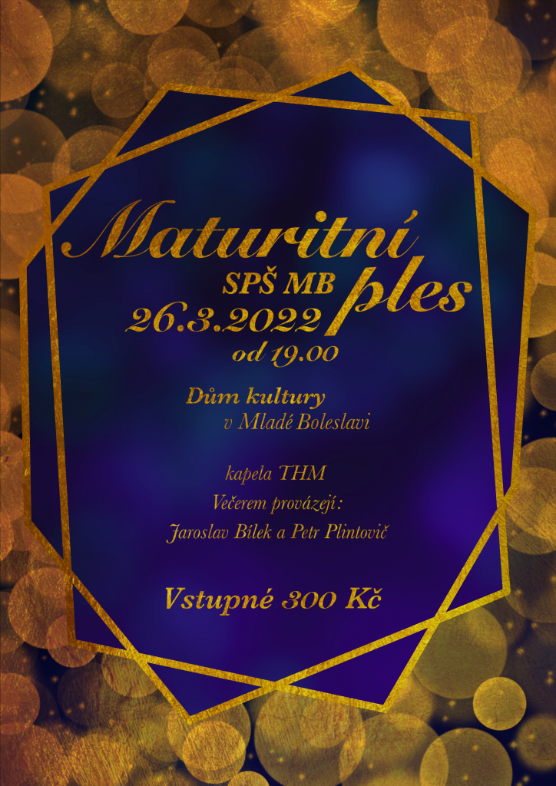

Kulturní akce
Úspěch v krajském kole
30.3. 2022 Ludmila RůžičkováPo druhém místě v okresním kole recitační soutěže následuje další úspěch, tentokrát v krajském kole, které proběhlo 26.3. 2022 v Kutné Hoře. Vladimír Šebesta, student 3.Cs, obsadil krásné čtvrté místo. Blahopřejeme!
Úspěch našich recitátorů v okresním kole přehlídky Wolkerův Prostějov 2022
8.3. 2022 Ludmila RůžičkováOkresní kolo recitační soutěže proběhlo 4. března 2022 na Gymnáziu Dr. Josefa Pekaře v Mladé Boleslavi. Naši studenti uspěli a obsadili:
2. místo Vladimír Šebesta
4.místo Tomáš Antoško
Blahopřejeme!
Recitační soutěž – školní kolo
8.3. 2022 Ludmila RůžičkováPo delší odmlce měli nejlepší recitátoři naší školy opět možnost sejít se a porovnat svůj přednes ve školním kole recitační soutěže. Z dvaceti zúčastněných uspěli nejlépe
v 1. kategorii: Pavel Mík z 1.Ai, Ladislav Jareš a David Vigláš, oba ze 2.Bi
ve 2. kategorii: Daniel Čančík ze 4.Dds, Tomáš Antoško a Vladimír Šebesta, oba z 3.Cs
Vítězové obdrželi odměny z fondu SRPŠ a postoupili do okresního kola. Všem přítomným patří poděkování za účast.
Srdečně Vás zveme na Maturitní ples Střední průmyslové školy Mladá Boleslav
7.3. 2022 Věra Svárovská
Informace k prodeji lístků na sekretariátu školy.
Jsme na Facebooku
SPŠ Mladá BoleslavStáž v zahraničí
V rámci vzdělávacího programu Erasmus+ absolvují vybraní studenti zahraniční stáž v Anglii nebo v Irsku. Stáži předchází přípravné hodiny angličtiny. Třítýdenní pobyt je plně hrazen z prostředků projektu.
Více o ErasmuZřizovatel školy
Střední průmyslová škola, Mladá Boleslav, Havlíčkova 456 je příspěvková organizace zřizovaná Středočeským krajem.